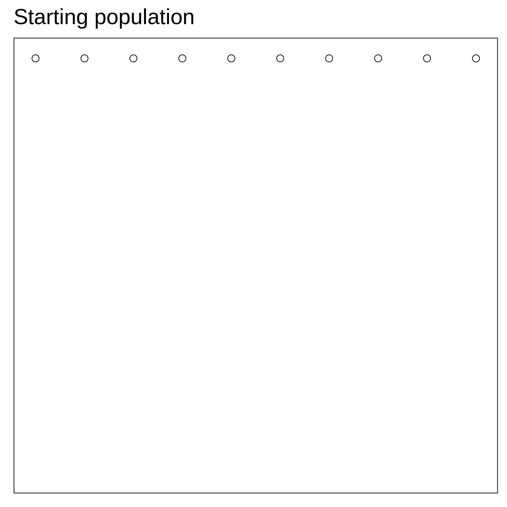
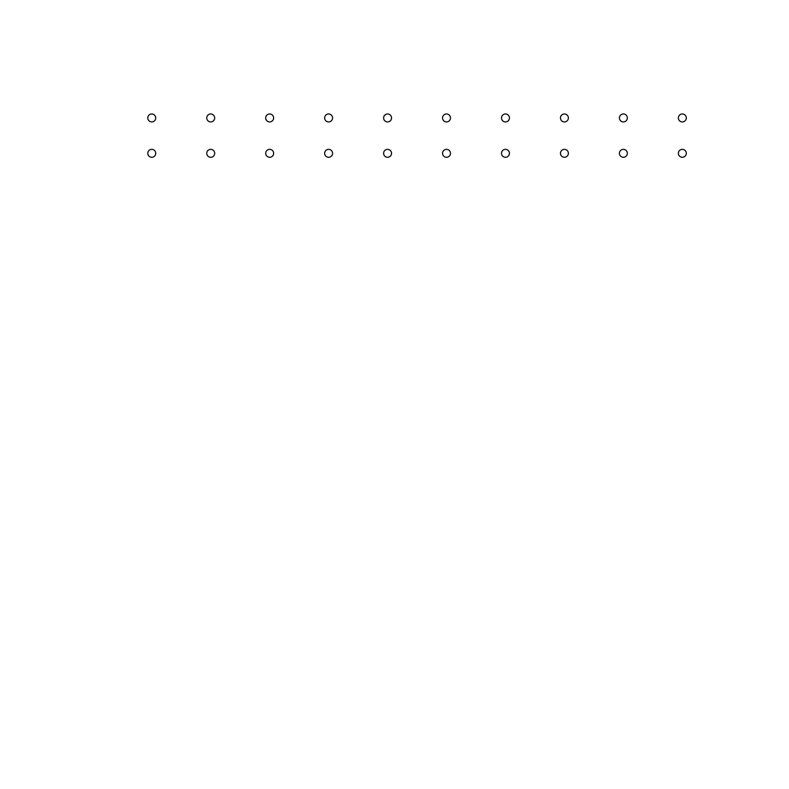
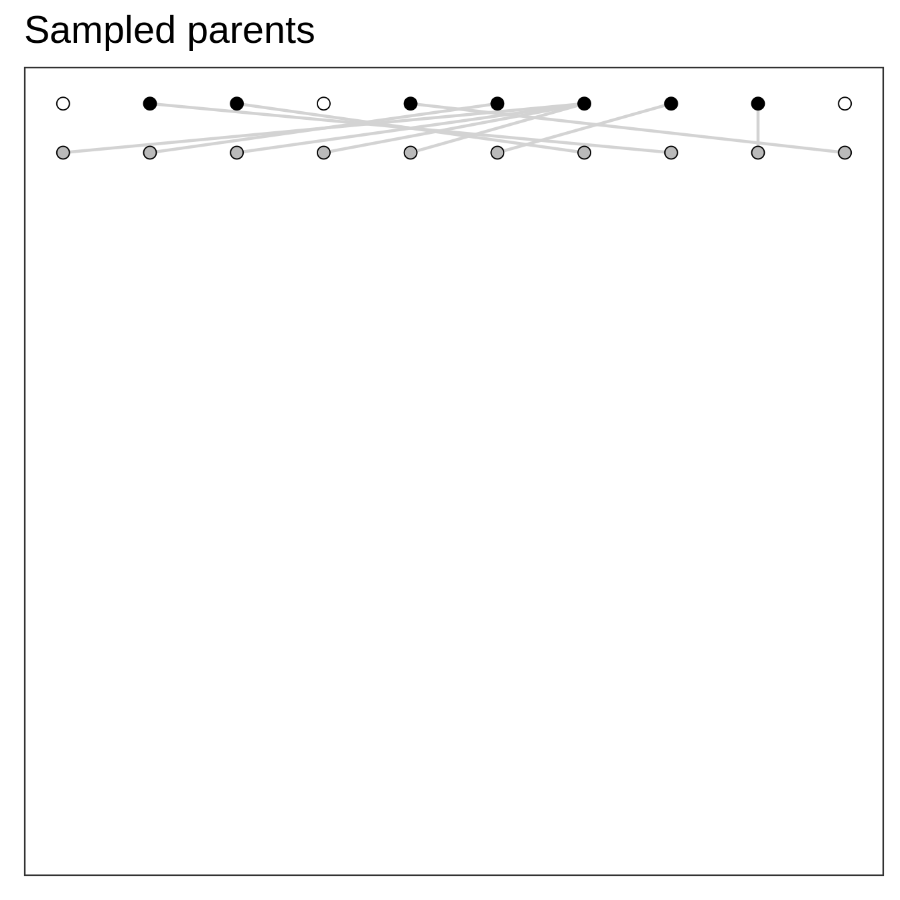
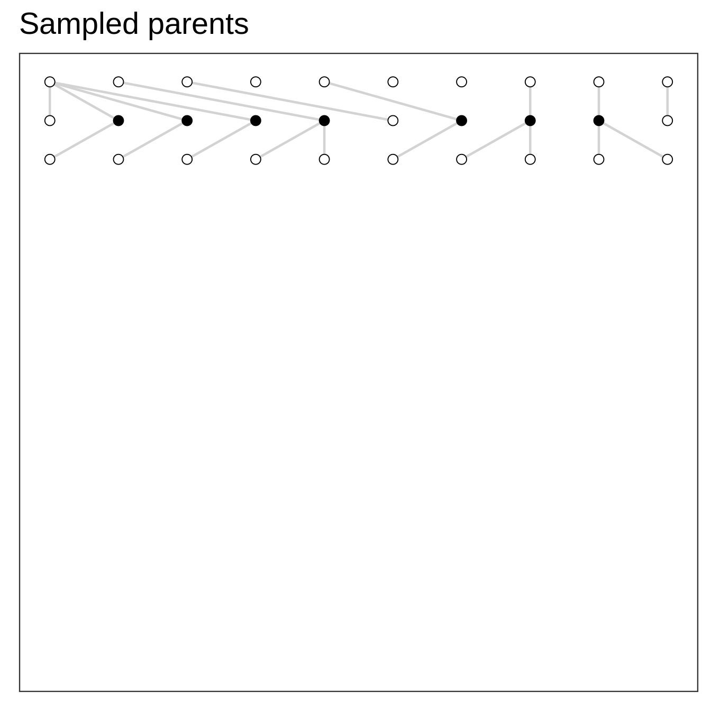
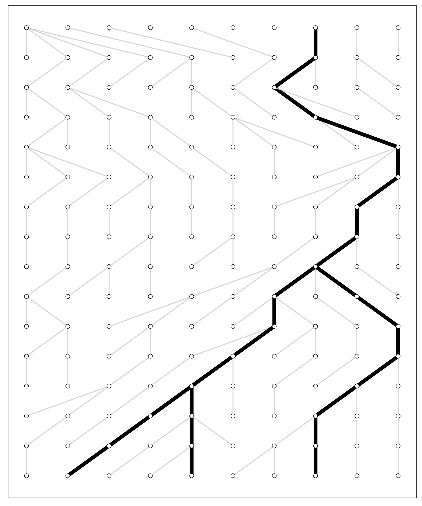
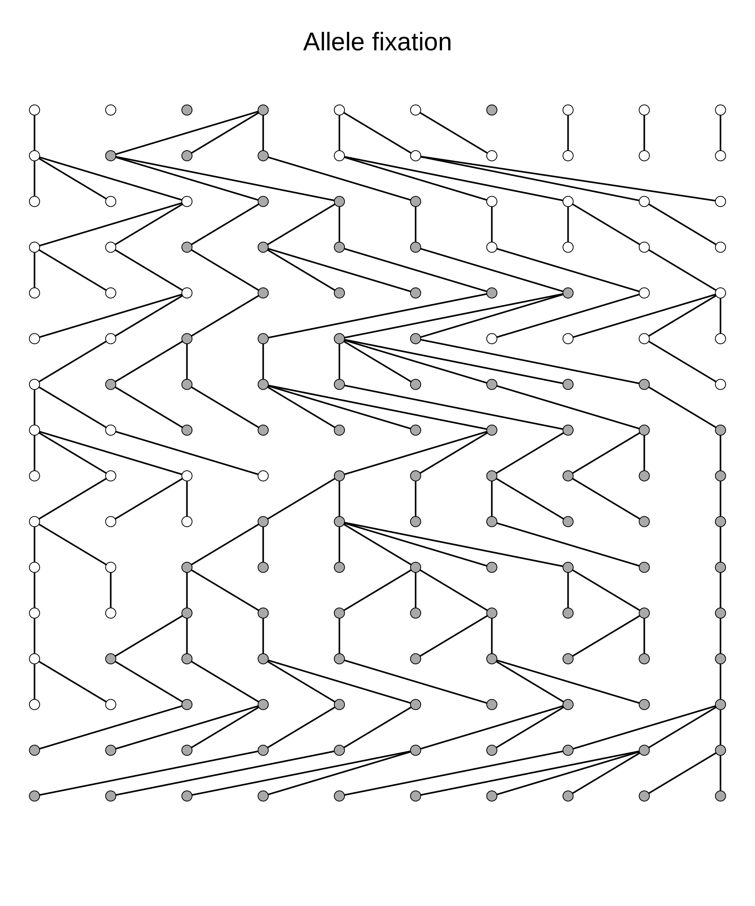
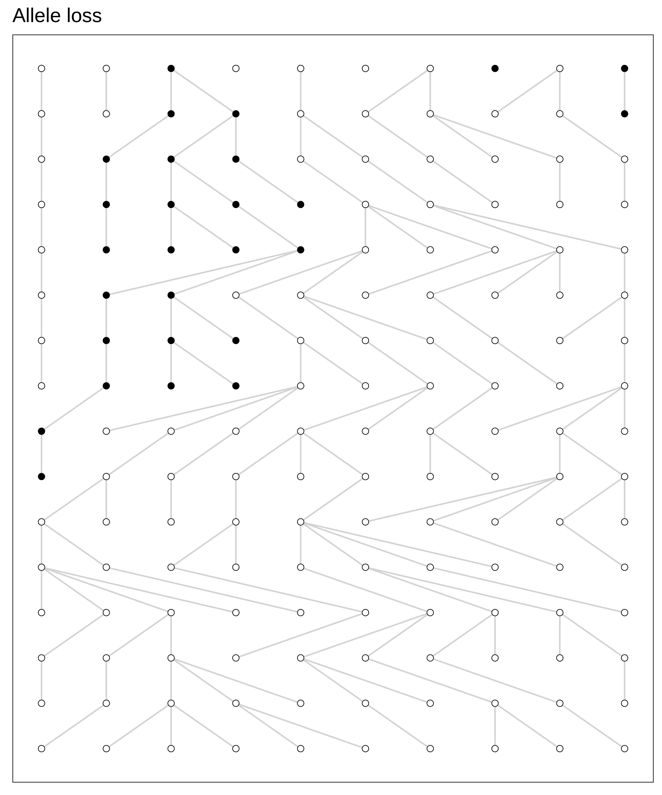
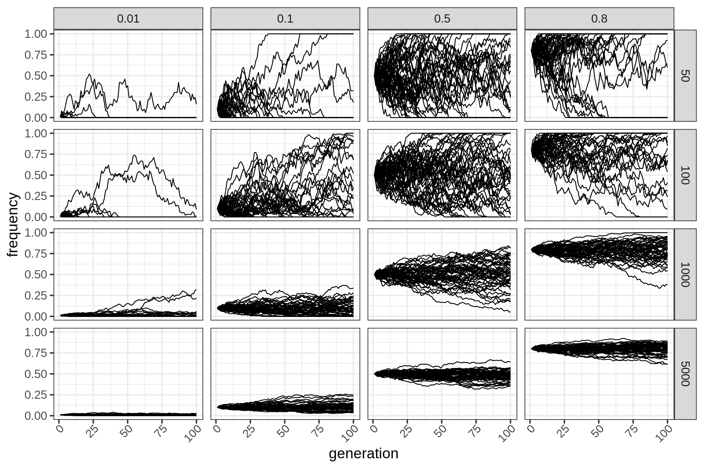
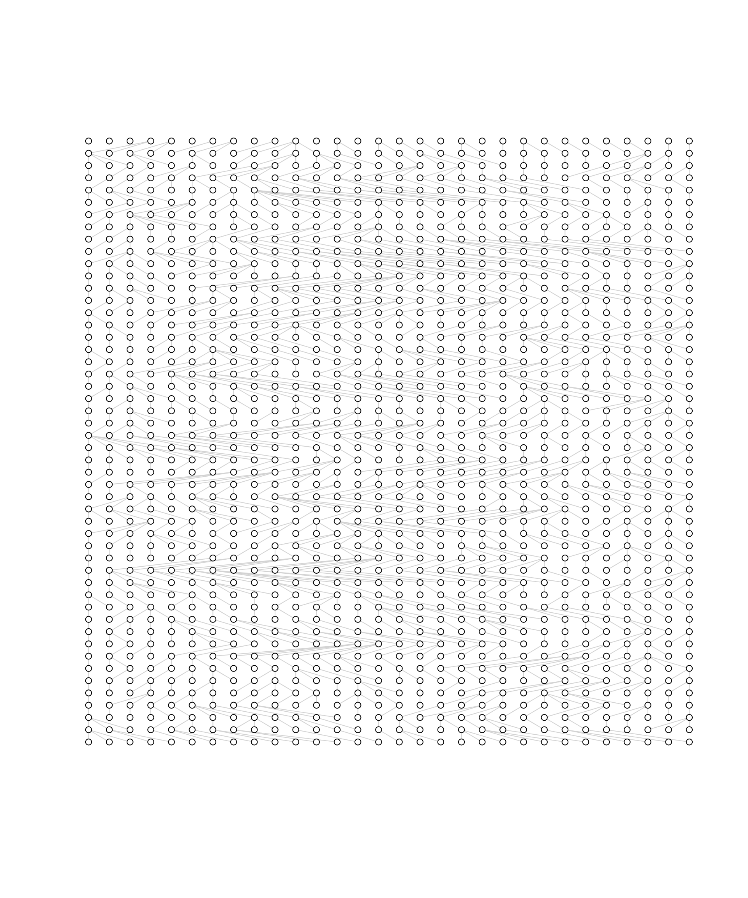
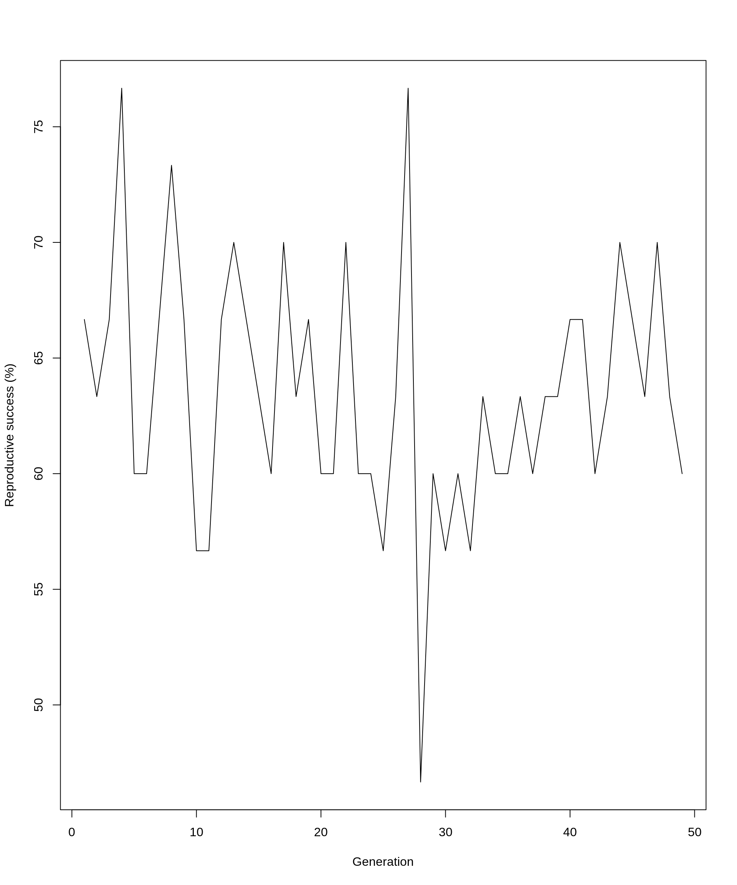

Population genetics
Foundations
Per Unneberg
NBIS
17-Apr-2023
Population genetics
DNA variation
| 1 | 2 | 3 | 4 | 5 | 6 | 7 | 8 | 9 | 10 | 11 | 12 | 13 | 14 | 15 |
|---|---|---|---|---|---|---|---|---|---|---|---|---|---|---|
| T | T | A | C | A | A | T | C | C | G | A | T | C | G | T |
| T | T | A | C | G | A | T | G | C | G | C | T | C | G | T |
| T | C | A | C | A | A | T | G | C | G | A | T | G | G | A |
| T | T | A | C | G | A | T | G | C | G | C | T | C | G | T |
The main data for molecular population genetics are DNA sequences. The alignment above shows a sample of four DNA sequences. Each sequence has 15 nucleotides (sites) “from the same locus (location) on a chromosome” (p.2 Hahn, 2019)
Alternative names for sequence:
- chromosome
- gene
- allele (different by origin)
- sample
- cistron
We will preferentially use sequence or chromosome to refer to an entire sequence, and allele to refer to individual nucleotides that differ.
DNA variation - monomorphic sites
| 1 | 2 | 3 | 4 | 5 | 6 | 7 | 8 | 9 | 10 | 11 | 12 | 13 | 14 | 15 |
|---|---|---|---|---|---|---|---|---|---|---|---|---|---|---|
| T | T | A | C | A | A | T | C | C | G | A | T | C | G | T |
| T | T | A | C | G | A | T | G | C | G | C | T | C | G | T |
| T | C | A | C | A | A | T | G | C | G | A | T | G | G | A |
| T | T | A | C | G | A | T | G | C | G | C | T | C | G | T |
| * | * | * | * | * | * | * | * | * | T |
The alignment has 4 DNA sequences where each sequence has length \(L=15\). A site where all nucleotides (alleles) are identical is called a monomorphic site (indicated with asterisks above). There are 9 monomorphic sites.
DNA variation - segregating sites
| 1 | 2 | 3 | 4 | 5 | 6 | 7 | 8 | 9 | 10 | 11 | 12 | 13 | 14 | 15 |
|---|---|---|---|---|---|---|---|---|---|---|---|---|---|---|
| T | T | A | C | A | A | T | C | C | G | A | T | C | G | T |
| T | T | A | C | G | A | T | G | C | G | C | T | C | G | T |
| T | C | A | C | A | A | T | G | C | G | A | T | G | G | A |
| T | T | A | C | G | A | T | G | C | G | C | T | C | G | T |
| * | * | * | * | * | * |
A site where there are different nucleotides (alleles) is called a segregating site (indicated with asterisks above), often denoted S. There are \(S=6\) segregating sites.
Alternative names for segregating site are:
- polymorphism
- mutation
- single nucleotide polymorphism (SNP)
mutation may refer to the process that generates new variation and the new variants generated by this process, which is the way we will use the term.
In contrast to mutation which corresponds to within-species variation, a substitution refers to DNA differences between species.
DNA variation - major and minor alleles
| 1 | 2 | 3 | 4 | 5 | 6 | 7 | 8 | 9 | 10 | 11 | 12 | 13 | 14 | 15 |
|---|---|---|---|---|---|---|---|---|---|---|---|---|---|---|
| T | T | A | C | A | A | T | C | C | G | A | T | C | G | T |
| T | T | A | C | G | A | T | G | C | G | C | T | C | G | T |
| T | C | A | C | A | A | T | G | C | G | A | T | G | G | A |
| T | T | A | C | G | A | T | G | C | G | C | T | C | G | T |
| * | * | * | * | * | * |
Much of the nucleotide variation we study consists of bi-allelic SNPs. The most common variant is called the major allele, and the least common the minor allele.
The set of alleles found on a single sequence is called haplotype.
Describing DNA variation
| 1 | 2 | 3 | 4 | 5 | 6 | 7 | 8 | 9 | 10 | 11 | 12 | 13 | 14 | 15 |
|---|---|---|---|---|---|---|---|---|---|---|---|---|---|---|
| T | T | A | C | A | A | T | C | C | G | A | T | C | G | T |
| T | T | A | C | G | A | T | G | C | G | C | T | C | G | T |
| T | C | A | C | A | A | T | G | C | G | A | T | G | G | A |
| T | T | A | C | G | A | T | G | C | G | C | T | C | G | T |
| * | * | * | * | * | * |
Once we have a sample of sequences we want to describe the observed variation. At any position the ith allele has sample frequency \(p_i\), where the sum of all allele frequencies is 1. For instance, at site 1, \(p_T=1\) (and by extension \(p_A=p_C=p_G=0\)), and at site 2 \(p_C=1/4\) and \(p_T=3/4\).
Heterozygosity
The heterozygosity at a site is given by
\[ h = \frac{n}{n-1}\left(1 - \sum p_i^2\right) \]
Exercise: calculate the heterozygosity at sites 1, 2 and 5
\[ h_1 = \frac{4}{3} \left(1 - p_T^2 \right) = 0 \\ h_2 = \frac{4}{3} \left(1 - \left(p_C^2 + p_T^2\right) \right) = \frac{4}{3} \left( 1 - \left(\frac{1}{16} + \frac{9}{16}\right)\right) = \frac{1}{2}\\ h_5 = \frac{4}{3} \left(1 - \left(p_A^2 + p_G^2\right) \right) = \frac{4}{3} \left( 1 - \left(\frac{1}{4} + \frac{1}{4}\right)\right) = \frac{2}{3} \]
Describing DNA variation
| 1 | 2 | 3 | 4 | 5 | 6 | 7 | 8 | 9 | 10 | 11 | 12 | 13 | 14 | 15 |
|---|---|---|---|---|---|---|---|---|---|---|---|---|---|---|
| T | T | A | C | A | A | T | C | C | G | A | T | C | G | T |
| T | T | A | C | G | A | T | G | C | G | C | T | C | G | T |
| T | C | A | C | A | A | T | G | C | G | A | T | G | G | A |
| T | T | A | C | G | A | T | G | C | G | C | T | C | G | T |
| * | * | * | * | * | * |
Nucleotide diversity \(\pi\)
The nucleotide diversity is the sum of site heterozygosities:
\[ \pi = \sum_{j=1}^S h_j \]
Calculate the nucleotide diversity
Observation: \(h_i\) either 1/2 or 2/3 (for sites with \(p_{major}=p_{minor}\)).
\[ \pi = \frac{1}{2} + \frac{2}{3} + \frac{1}{2} + \frac{2}{3} + \frac{1}{2} + \frac{1}{2} = 3\frac{1}{3} \]
Often we provide \(\pi\) per site:
\[ \pi = 3.33/15 = 0.222 \]
Origin and change of variation
Wright-Fisher model
Model of evolution that describes sampling of alleles in a population under the following assumptions (Hein et al., 2005):
- discrete and non-overlapping generations
- haploid individuals or two subpopulations (males and females)
- constant population size
- all individuals are equally fit
- population has no geographical or social structure
- no recombination
Wright-Fisher model
Model of evolution that describes sampling of alleles in a population under the following assumptions (Hein et al., 2005):
- discrete and non-overlapping generations
- haploid individuals or two subpopulations (males and females)
- constant population size
- all individuals are equally fit
- population has no geographical or social structure
- no recombination
Algorithm
- Setup starting population at time zero

Wright-Fisher model
Model of evolution that describes sampling of alleles in a population under the following assumptions (Hein et al., 2005):
- discrete and non-overlapping generations
- haploid individuals or two subpopulations (males and females)
- constant population size
- all individuals are equally fit
- population has no geographical or social structure
- no recombination
Algorithm
- Setup starting population at time zero
- Add offspring (same size) at time one

Wright-Fisher model
Model of evolution that describes sampling of alleles in a population under the following assumptions (Hein et al., 2005):
- discrete and non-overlapping generations
- haploid individuals or two subpopulations (males and females)
- constant population size
- all individuals are equally fit
- population has no geographical or social structure
- no recombination
Algorithm
- Setup starting population at time zero
- Add offspring (same size) at time one
- Select parents to offspring at random

Wright-Fisher model
Model of evolution that describes sampling of alleles in a population under the following assumptions (Hein et al., 2005):
- discrete and non-overlapping generations
- haploid individuals or two subpopulations (males and females)
- constant population size
- all individuals are equally fit
- population has no geographical or social structure
- no recombination
Algorithm
- Setup starting population at time zero
- Add offspring (same size) at time one
- Select parents to offspring at random

Wright-Fisher model
Wright-Fisher model
Wright-Fisher model
Figure 1: Wright-Fisher model tracing the genealogies of three extant genes
Genetic drift with alleles


Wright-Fisher model showing the evolution of population of 10 genes over 16 generations. Allele variants are shown in white and dark grey. Starting frequency dark grey variant is 0.3.
Genetic drift
To capture dynamics, follow allele frequency trajectory as function of time.
##' Wright Fisher model - follow allele frequency distribution
##'
##' @param p0 Starting frequency
##' @param n Population size
##' @param generations Number of generations to simulate
##'
wright_fisher <- function(p0, n, generations) {
x <- vector(mode = "numeric", length = generations)
x[1] <- p0
for (i in seq(2, length(x))) {
x[i] <- rbinom(1, size = n, prob = x[i - 1])/n
}
x
}Note dependency of “jumpyness” (variance) on population size N

Genetic drift
Figure 3: Genetic drift for different combinations of starting frequency and population size for n=50 repetitions per parameter combination. Note how variation and time to fixation depends on population size and starting frequency.
Mutation
Drift randomly “moves” frequencies, but once lost, how does new variation arise? Mutation.
Introduce variation at rate \(2N_e\mu\)
Mutation - drift balance
Infinite sites vs infinite alleles
Selection
Relative fitness.
Define s, positive and negative selection
Direct selection
d_N/d_S
Two-locus dynamics
Graph focal locus and flanking loci (Charlesworth figure)
- Linkage disequilibrium and recombination (each probably need separate treatment)
- Contrast linked selection with direct selection
- Genetic draft / background selection
Neutral theory
Move right after drift?
- Hahn: \(\mu = \nu*f_0\)
- why population size matters
- Fig 4.2, Eq 4.2 from Lynch
Nearly neutral theory
- Distribution of fitness effects?
A primer on simulation
If simulation section show brief code examples
Wright-Fisher model again
Repeat WF model. Point out that it can be used for forward simulation. Show how many individuals are lost each generation (limit e-1): lose lots of compute resources on the way to extant sample.


Mean reproductive success = \(sprintf("%.2f%%", xmean)\). Can show for large populations P(no descendants)=\(e^{-1}\)
The coalescent
Introduce concept. Describe algorithm (show code - include as exercise?). Genealogy and mutations:
- sim_ancestry
- sim_mutations
Note that #mutations propto branch length -> don’t actually even need to know the mutations (e.g. fastsimcoal)
The coalescent: diminishing returns
Show plot of diminishing returns (better to add sites, not samples)
The coalescent and diversity
Recalculate example
Evolutionary processes and genealogies
Non-neutral processes change topologies in ways that we detect when applying tests (Ferretti et al., 2017)
genealogies change due to non Show some qualitative examples of how trees change for
- bottleneck
msprime
SLiM
Mention advances in forward simulations
Recapitation
Combine the best of two worlds
Recipes
Show some recipes and the pgip CLI
Population genetics foundations